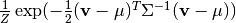

Restricted Boltzmann Machines (RBM)¶
Notation¶
- : D Gaussian visible units
- : N covariance-hidden units
- : weight matrix connecting N covariance-hidden units to F factors
- : weight matrix connecting F factors to D visible units
- : biases of N covariance-hidden units
- : M mean-hidden units
- : weight matrix connecting M mean-hidden units to D visible units
- : biases of M mean-hidden units
Energy Functions¶
Covariance Energy¶
(1)
Mean Energy¶
(2)
Conditionals: ¶
This is the same derivation as with standard RBMs. We start with the observation that the mean-hidden units are conditionally-independent given the visible units, hence .
We can then derive as follows:
The activation probability of a mean-hidden unit, , is thus:
Conditionals: ¶
It is straightforward to show that the covariance-hidden units are also conditionally independent. This is due to the fact that is linear in , thus:

The rest of the derivation is equivalent to ref{sec:hm_given_v}, substituting for . This yields:
Conditionals: ¶
From basic probability, we can write:
Setting , we can now write:
Since we know that are Gaussian random variables, we need to get
the above in the form . We can do this by completing the squares and then
solving for  in the cross-term, which gives
, and .
in the cross-term, which gives
, and .
Our conditional distribution can thus be written as:
Free-Energy¶
By definition, the free-energy of a given visible configuration is: . We can derive the free-energy for the mcRBM as follows:
![\F(\v) = &-\log \sum_{h^c} \sum_{h^m} \exp(-\E^c(\v,\h^c) - \E^m(\v,\h^m)) \nonumber \\
= &-\log \sum_{h^c} \sum_{h^m} \left[ \prod_{k=1}^N \exp(-\E^c(\v,\h_k^c))
\prod_{j=1}^M \exp(-\E^m(\v,\h_j^m)) \right] \nonumber \\
= &-\log \left[ \prod_{k=1}^N (1 + \exp(-\E^c(\v,\h_k^c=1)))
\prod_{j=1}^M (1 + \exp(-\E^m(\v,\h_j^m=1))) \right]\nonumber \\
= &-\sum_{k=1}^N \log(1 + \exp(-\E^c(\v,\h_k^c=1)))
-\sum_{j=1}^M \log(1 + \exp(-\E^m(\v,\h_j^m=1))) \nonumber \\
= &-\sum_{k=1}^N \log(1 + \exp(\frac{1}{2} \sum_{f=1}^F P_{fk} (\sum_{i=1}^D C_{if} v_i)^2 + b_k^c)) \nonumber \\
&-\sum_{j=1}^M \log(1 + \exp(\sum_{i=1}^D W_{ij} v_i + b_j^m)) \nonumber](_images/math/b88914d45e980b290b03af7c262846d1ec30f315.png)